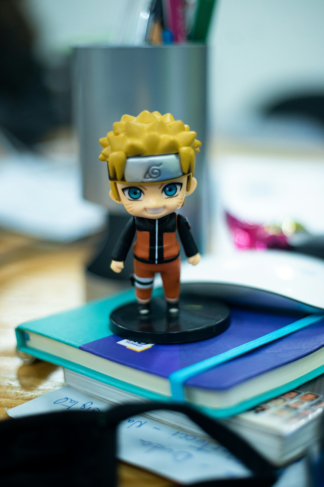

Naruto Uzumaki is the main protagonist of the manga and animated series "Naruto" created by Masashi Kishimoto. Naruto is known to be a ninja from the Hidden Leaf Village and has dreams of becoming the Hokage, the leadr of his village. He is known for his cheerful personality and his determination to never give up, even in the face of adversity.